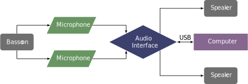

This piece was composed for Rebekah Heller in 2021 and can be obtained by contacting the composer at their website. The piece portrays the disruptive process of drilling for oil, both musically as well as through graphic notation.
The setup for this piece is similar to many other pieces with Max/MSP. The sound of the bassoon should be captured with two microphones. A MIDI controller could be used to start the patch if another performer is not operating the electronics, although that would require a small amount of Max programming knowledge.
The setup for this piece is shown below. 
The patch does not require much interactivity at all. It runs on a timer and triggers various effects based on the time. It is almost like playing a piece with tape that also does live signal processing. The score recommends a dedicated electronics performer mostly to monitor the levels of various effects. One interesting feature of this patch is that it has the ability to record the performance built into the patch. To begin the patch, the performer simply needs to click the start button by the clock. To record, first click the open button and choose where the file will be saved, then click the record button.
This piece makes use of multiphonics and tongue flaps, but other than that is a pretty straightforward piece. The main technical difficulty is following the graphic notation and keeping up with the time. The score features a straight, vertical line through the pages (it may be best to perform this on a tablet) with deviating fissures to the sides. The way the fissures are drawn determines how the theme changes and what additional musical elements can feature in the improvisation. The electronics are not difficult at all, as it is not too different from playing with tape. Overall, this would be a great piece for an undergraduate student to introduce them not only to live electronic pieces, but also to graphical notation, multiphonics, and improvisation.
This piece is very improvisatory in nature, so the way it sounds is largely up to the improvisational style of the performer. This piece would do well for all audiences, except perhaps for political reasons in some audiences in oil-producing areas. From a strictly musical perspective, it is very accessible.
©2024 by Benjamin Bradshaw
Logo ©2024 by Hannah Bradshaw